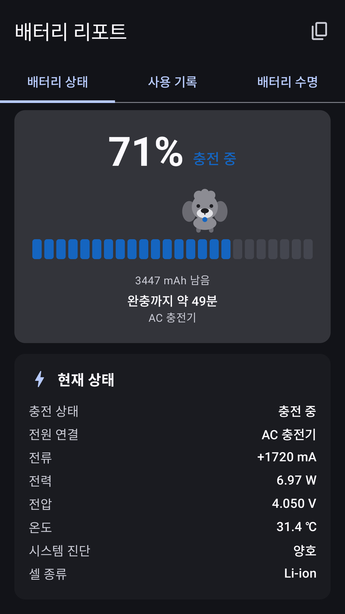
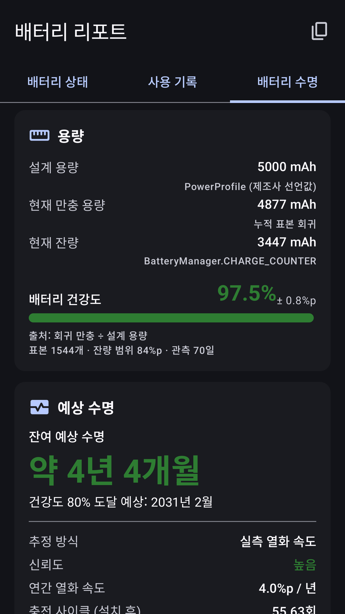
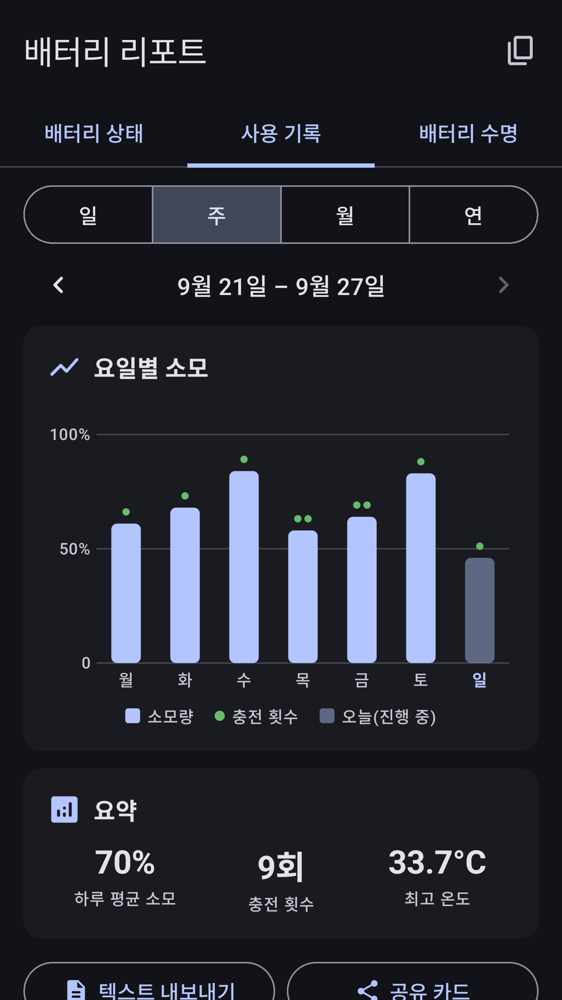
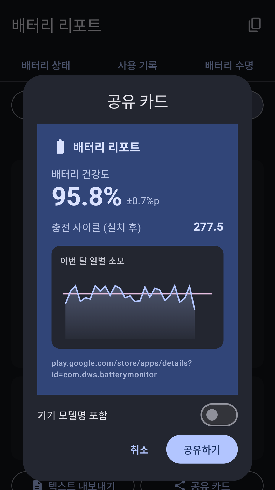
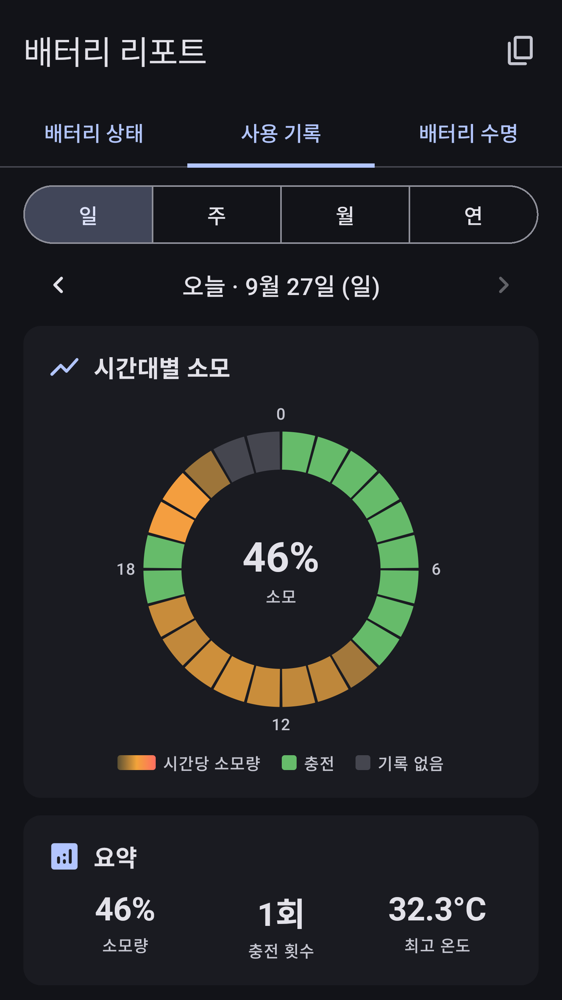
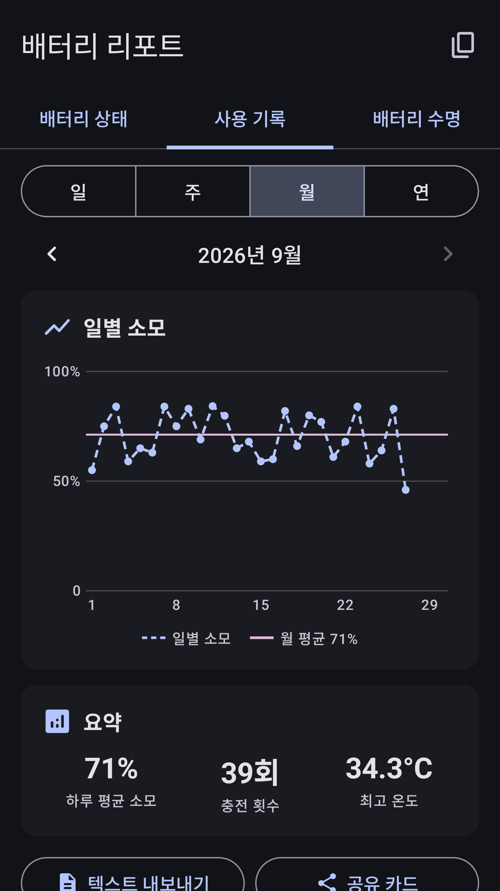
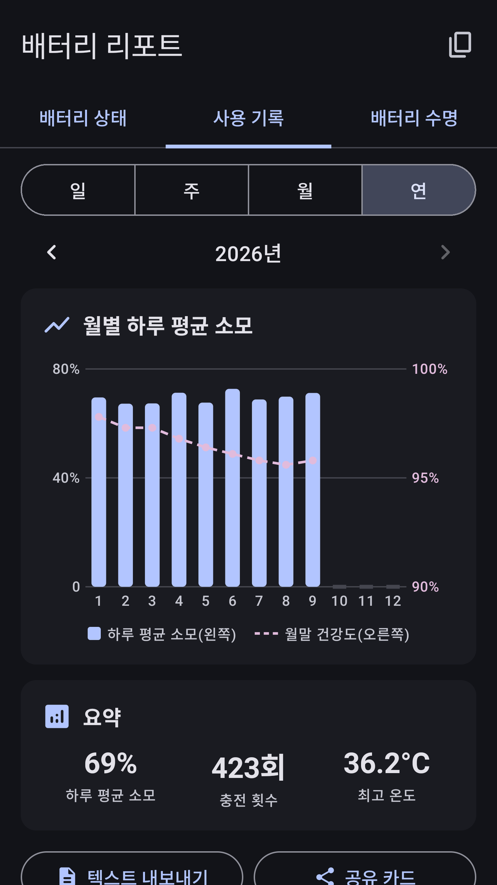
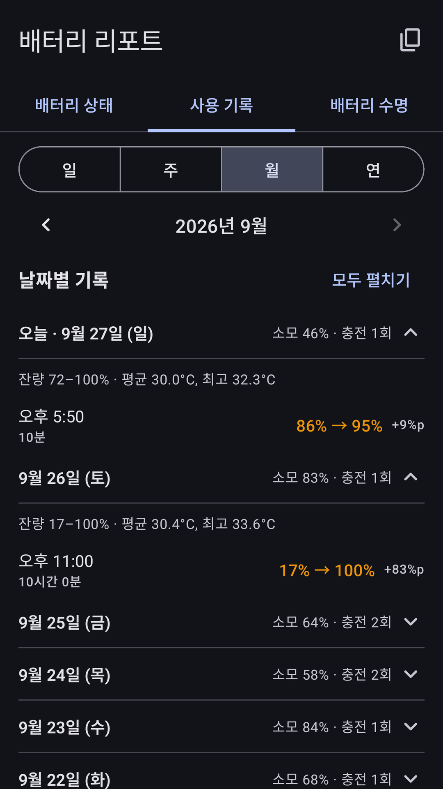

내 폰 배터리,
진짜 상태를
숫자로 확인하세요
설계 용량, 현재 만충 용량, 건강도와 예상 수명을 한 화면에서. 모든 값에 어디서 읽었는지 출처를 함께 보여 주는 배터리 앱입니다.
Google Play 출시 · 무료Android 8.0 이상 · 배터리 측정에 권한이 필요 없습니다

정확하지 않으면,
정확하지 않다고 말합니다
안드로이드에는 설계 용량과 만충 용량을 알려 주는 공식 API가 없습니다. 그래서 많은 앱이 추측한 값을 정답처럼 보여 줍니다. 배터리 리포트는 모든 숫자를 세 가지로 구분합니다.
- 측정값출처와 함께
기기에서 읽은 값은 어디서 읽었는지 출처를 함께 표시해요. 사용자가 직접 신뢰도를 판단할 수 있어요.
- 참고값추정은 추정이라고
직접 읽을 수 없어 계산한 값은 ‘참고값’으로 구분하고, 왜 정확하지 않은지도 설명해요.
- 미지원모르면 비워 둡니다
기기가 공개하지 않는 항목은 그럴듯한 숫자로 채우지 않고 ‘미지원’으로 남겨요.
지금 상태부터 남은 수명까지
지금 배터리 상태를
한눈에
잔량과 충전 상태는 물론, 전류·전력·전압·온도까지 실시간으로 보여 줘요.
- 잔량, 전류, 전력, 전압, 온도, 셀 종류
- 완충까지 남은 시간, 남은 사용 가능 시간
- 시스템이 판단한 배터리 진단 상태
용량, 건강도,
그리고 예상 수명
설계 용량과 현재 만충 용량으로 건강도를 계산하고, 언제쯤 교체 기준에 닿을지 알려 줘요. 어떤 방식으로 추정했는지와 신뢰도를 항상 함께 표시해요.
- 설계 용량, 현재 만충 용량, 현재 잔량(mAh)
- 건강도와 ± 불확실도 범위
- 예상 잔여 수명과 교체 권장 시기

쓰는 만큼 쌓이는
사용 기록
하루, 일주일, 한 달, 일 년 단위로 배터리를 얼마나 썼는지 그래프로 돌아봐요.
- 일·주·월·연 단위 소모 그래프
- 하루 평균 소모, 충전 횟수, 최고 온도 요약
- 날짜별 소모·충전 기록

AS 문의도, 자랑도
그대로 공유
측정 결과를 텍스트 리포트로 복사해 서비스센터 문의에 붙여 넣거나, 건강도를 담은 공유 카드로 보낼 수 있어요.
- 진단 리포트 복사와 텍스트 내보내기
- 건강도와 사용 그래프를 담은 공유 카드
- 기기 모델명 포함 여부는 직접 선택

근거가 강한 방식부터,
네 단계로 추정합니다
- 가장 정확
실측 열화 속도
앱이 기록한 건강도 변화를 직선으로 이어 앞으로를 내다봐요.
충전 사이클 기반
사이클 한 번당 열화율로 환산해요.
기기 연식 기반
사용 기간 대비 평균 감소 속도로 계산해요.
- 시작 단계
리튬이온 통계 기준
일반적인 연간 열화율을 적용해요.
처음에는 4단계로 시작해 표본이 쌓이면 자동으로 위 단계로 올라갑니다. 지금 어떤 방식을 쓰는지와 신뢰도는 화면에 항상 표시돼요.
작지만 꼼꼼하게
-
홈 화면 위젯
토이푸들이 잔량, 남은 시간, 건강도, 온도를 홈 화면에서 알려 줘요.
-
표본 회귀 분석
만충 용량을 읽을 수 없는 기기에서는 여러 시점의 표본으로 계산해요. 쌓일수록 오차가 줄어요.
-
데이터 출처 확인
앱 하단 ‘데이터 출처’에서 내 기기가 어떤 값을 공개하는지 직접 확인할 수 있어요.
-
사이클·제조일
기기가 공개하면 충전 사이클, 배터리 제조일, 최초 사용일도 보여 줘요.
-
정밀도 알림
측정이 더 정확해지면 알려 드려요. 원할 때만 켜는 선택 기능이에요.
-
권한 없이 측정
배터리 정보를 읽는 데 런타임 권한이 필요 없어요. 위치·연락처·저장소에 접근하지 않아요.
배터리 리포트를 미리 둘러보세요
실제 앱 화면입니다. 표시되는 값과 항목은 기기와 사용 환경에 따라 달라요.
배터리 상태잔량, 완충까지 남은 시간, 전류·전압·온도 용량·예상 수명설계·만충 용량, 건강도, 남은 수명 
하루 기록시간대별 소모와 충전 주간 기록요일별 소모와 충전 횟수 
월간 기록일별 소모 추이와 월 평균 
연간 기록월별 하루 평균 소모와 건강도 변화 
날짜별 기록날마다 소모·충전 내역 공유 카드건강도와 그래프를 이미지로 공유
옆으로 넘겨 더 보기 →
측정값은 기기 밖으로
나가지 않습니다
배터리 리포트에는 측정값을 외부로 보내는 기능이 없습니다. 개발자도 사용자의 배터리 정보를 볼 수 없습니다.
-
기기 안에만 저장
측정 기록은 기기 내부에만 저장되고, 앱을 지우면 함께 지워져요.
-
회원가입 없음
이름, 이메일, 위치 같은 개인정보를 요구하지 않아요.
-
묻는 권한은 하나
알림 권한 하나뿐이며, 정밀도 알림을 직접 켤 때만 요청해요.
-
측정만 합니다
배터리를 ‘최적화’하거나 수명을 늘려 준다고 약속하지 않아요. 측정하고 보여 주기만 해요.
알아 두세요
- 건강도와 충전 사이클은 제조사가 공개해야 읽을 수 있어요. 최신 기기 중 이 정보를 막아 둔 경우에는 해당 항목이 ‘미지원’으로 표시돼요.
- 정확도를 높이기 위해 앱을 닫은 뒤에도 약 1시간 간격으로 배터리 값을 기기 안에 기록해요.
- 무료로 제공하기 위해 화면 하단 배너 광고와 카드 사이 네이티브 광고를 표시하며, 이 과정에서 Google이 광고 식별자 등을 처리해요.
자주 묻는 질문
제 폰에서는 건강도가 ‘미지원’으로 나와요.
건강도와 충전 사이클은 제조사가 시스템에서 공개해야 앱이 읽을 수 있습니다. Android 14 이상에서 제조사가 지원하는 기기는 정확하게 표시되지만, 정보를 막아 둔 기기는 루팅 없이 읽을 방법이 없습니다. 이때 배터리 리포트는 값을 지어내지 않고 ‘미지원’으로 남깁니다. 앱 하단 ‘데이터 출처’에서 내 기기가 공개하는 값을 확인할 수 있어요.
다른 배터리 앱과 숫자가 달라요.
공식 API가 없는 값을 다른 앱은 추정치로 채우는 경우가 많습니다. 배터리 리포트는 값마다 출처를 밝히고, 추정한 값은 ‘참고값’으로 구분해 범위와 함께 보여 줍니다. 어느 쪽이 실제 측정값인지 화면에서 바로 확인해 보세요.
처음 설치했을 때는 예상 수명이 부정확해요.
정상입니다. 처음에는 리튬이온 통계 기준으로 시작하고, 앱이 표본을 모을수록 실측 기반 방식으로 자동 전환됩니다. 지금 어떤 방식인지와 신뢰도는 화면에 항상 표시됩니다.
배터리를 아껴 주거나 수명을 늘려 주나요?
아니요. 배터리 리포트는 배터리를 최적화하거나 수명을 연장하지 않습니다. 정확하게 측정하고 보여 주는 데만 집중합니다.
무료인가요? 어떤 권한이 필요한가요?
무료로 받을 수 있고, 광고가 표시됩니다. 배터리 정보를 읽는 데는 권한이 필요 없으며, 사용자에게 묻는 권한은 정밀도 알림을 켤 때의 알림 권한 하나뿐입니다.